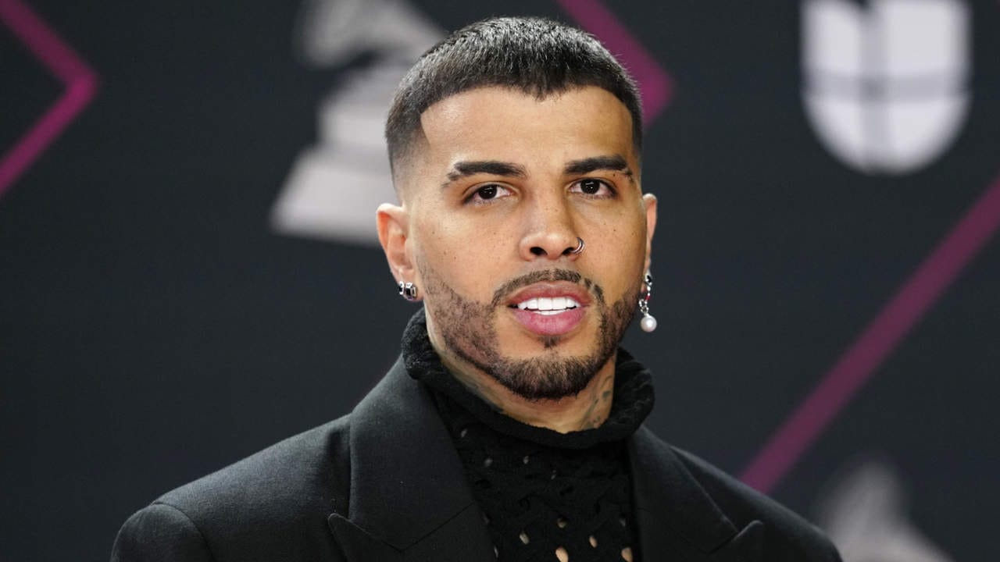

Rauw Alejandro
Rauw Alejandro es un cantante, compositor, bailarín y estrella de la música urbana puertorriqueña. Su nombre real es Raúl Alejandro Ocasio Ruiz. Nació el 10 de enero de 1993 en Palma Sola, un barrio de Canóvanas, Puerto Rico Proviene de una familia humilde de cantantes. Su padre, Raúl Ocasio, es guitarrista y su madre, María Nelly Ruiz, es corista. El artista es considerado como parte de la nueva generación de cantantes urbanos en Puerto Rico. En noviembre del 2016 lanzó su álbum debut titulado “Punto de Equilibrio”. En enero de 2017 firmó un contrato discográfico con la discográfica independiente Duars Entertainment.
Logros Principales
-
Rauw Alejandro ha tenido muchos logros, entre ellos premios, nominaciones y certificaciones.
Premios
-
.Dos premios Grammy Latinos.
-
.Dos Premios Billboard de la Música Latina.
-
.Dos Premios Lo Nuestro.
-
.Cinco Premios Tú Música Urbano.
-
.Dos Premios Juventud.
-
.Un iHeart Radio Award.
-
.Premio Odeón.
-
.Nominaciones:
-
.Tres nominaciones a los Premios Grammy.
-
.Nominación al Grammy por su álbum Saturno en la categoría de “Mejor Álbum de Música Urbana”.
-
Certificaciones:
.Certificación Oro en Centroamérica con su álbum Cosa nuestra.
-
Logros de ventas
-
.Su álbum Vice Versa debutó en el puesto #1 en la lista de álbumes latinos de Billboard.
-
.Su álbum Saturno fue elogiado por la crítica y fue nominado a un Grammy.
-
Otros logros
Presentó “Déjame Entrar” y “Touching The Sky” durante la Citi Concert Series del programa estadounidense matutino TODAY Show
Participó en el histórico concierto que ofreció Rosalía en Coachella
Rau Alejandro es un cantautor, compositor, bailarín y productor musical puertorriqueño.
Trayectoria Musical
-
Se formó como músico en las calles de Carolina. Comenzó a publicar canciones de reguetón en la plataforma musical digital Soundcloud.
El éxito fue progresivo pero irrefutable. Su primer disco, Afrodisíaco, se publicó en 2020 y contó con la colaboración de artistas como J Balvin, entre otros.
-
2014-2017: Inicios
-
Comenzó su carrera en 2014 con la canción Inevitable» y se mantuvo en los años siguientes lanzando canciones como Eso que tienes, Días así, No me hagas esperar y I.D.G.F.
en 2015 y Pa' serio, Como nunca, Mala mía, Back To Sleep y Misiones en 2016.
Lanzó su primer mixtape titulado Punto De Equilibrio en 2016, el cual contó con las colaboraciones de Myke Towers, Álvaro Díaz, Joyce Santana y Rafa Pabön.
Lanzó canciones en 2017 como La oportunidad, Las justas, Ahora dice, Tómalo, Luz roja, Ta' moja, Estamos mal, Se hace tarde y Toda junto a Alex Rose,
el cual contó con las colaboraciones de Myke Towers, Álvaro Díaz, Joyce Santana y Rafa Pabön.
Lanzó canciones en 2017 como La oportunidad, Las justas, Ahora dice, Tómalo», Luz roja, Ta' moja, Estamos mal, Se hace tarde y Toda junto a Alex Rose,
el cual contó con una remezcla en 2018 con Cazzu, Lenny Tavárez y Lyanno.
Esta remezcla cuenta con más de 300 millones de reproducciones en Spotify y más de 1.000 millones en YouTube.
2018-2020: Internacionalización y Trap Cake
-
En 2018, publicó su versión de la canción Tú te imaginas de De la Ghetto con el que ganó reconocimiento.
Participó en canciones como Pa' tu casa y Luz apagá, con los que logró consolidarse aún más. Sin embargo, con el lanzamiento de los sencillos Que le dé en colaboración con Nicky Jam,
El sencillo Fantasías con Farruko, El efecto junto a Chencho Corleone de Plan B, además de su remezcla que contó con Bryant Myers, Dalex, Kevvo y Lyanno,
lo lanzaron al reconocimiento en todo el continente a fines del año 2019.
En 2019, lanzó su primer EP titulado Trap Cake, el cual contó con participaciones de artistas como Cazzu, De la Ghetto, Jon Z, Darell, Lary Over, entre otros.
020-presente: Afrodisíaco, Vice Versa, Trap Cake, Vol. 2 y Saturno
-
En 2020, publicó su primer álbum de estudio titulado Afrodisíaco, el cual contó con las colaboraciones de Anuel AA, J Balvin, Zion & Lennox,
Sech, Wisin & Yandel, Arcángel, Randy, Trippie Redd, entre otros.
-
En 2021, lanzó una de sus canciones más exitosas Todo de ti, el cual alcanzó el puesto número dos en Top Songs Global en Spotify, cosechó seis discos de platino en Estados Unidos,
cuatro en España y múltiples discos de oro, algunos en Argentina o México.
A raíz del éxito del mismo, lanzó su segundo álbum de estudio titulado Vice Versa, que consiguió el número uno en España, además de obtener la certificación de platino en el país anglosajón tras superar las 60.000 unidades de dicho material.
En otros países como Colombia o Perú, obtuvo la certificación de platino y oro, siendo el álbum más vendido del cantante hasta la fecha.
-
En septiembre de 2021, participó como invitado especial en el último capítulo de La reina del flow 2 en un concierto multitudinario junto con el resto de los personajes del programa.
Al mes siguiente, colaboró con la cantante argentina Nicki Nicole en el sencillo Sabe y luego en diciembre estrenó Desesperados con el cantante Chencho Corleone.
2018-2020: Internacionalización y Trap Cake
020-presente: Afrodisíaco, Vice Versa, Trap Cake, Vol. 2 y Saturno
Vida Personal
-
Desde finales de 2019 mantuvo una relación con la cantante española Rosalía, y lo hizo público en septiembre de 2021.
Los dos habían trabajado juntos en su álbum de estudio debut, Afrodisíaco, que se lanzó el 13 de noviembre de 2020.
En abril de 2023, anunciaron que lanzarían un EP conjunto titulado RR. La pareja anunció su compromiso el 24 de marzo de 2023.
No obstante, el 25 de julio de 2023 se anunció en los medios la ruptura de la pareja.
-
El estilo musical de Rauw Alejandro incluye R&B latino, reguetón, Pop latino rítmico y baladas.
Billboard comentó que ha ayudado a distinguirlo de una clase creciente de reguetoneros de tendencia pop.
Fue influenciado desde el principio por Presley y Jackson, y más tarde por Ricky Martin, Daddy Yankee y Chris Brown. También cita a Ciara como inspiración musical.